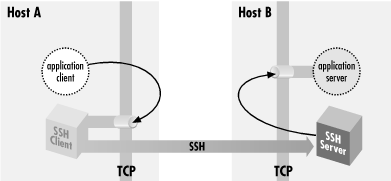

9.2. Port Forwarding
SSH uses TCP/IP as its transport
mechanism, usually TCP port 22 on the server machine, as it encrypts
and decrypts the traffic passing over the connection. We will now
discuss a cool feature that encrypts and decrypts TCP/IP traffic
belonging to other applications, on other TCP ports, using SSH. This
process, called port forwarding, is largely transparent and quite
powerful. Telnet, SMTP, NNTP, IMAP, and other insecure protocols
running over TCP can be made secure by forwarding the connections
through SSH. Port forwarding is sometimes called tunneling because
the SSH connection provides a secure "tunnel" through
which another TCP/IP connection may pass.
Suppose you have a home machine H that runs an IMAP-capable email
reader, and you want to connect to an IMAP server on machine S to
read and send mail. Normally, this connection is insecure, with your
mail account password transmitted as plaintext between your mail
program and the server. With SSH port forwarding, you can
transparently reroute the IMAP connection (found on server S's
TCP port 143) to pass through SSH, securely encrypting the data over
the connection.
[120] The IMAP server machine must be running an SSH server for
port forwarding to provide real protection.
In short, with minimal configuration changes to your programs, SSH
port forwarding protects arbitrary TCP/IP connections by redirecting
them through an SSH session. Port forwarding can even pass a
connection safely through a firewall if you configure things
properly. Once you start securing your communications with port
forwarding, you'll wonder how you ever got along without it.
Here are examples of what you can do:
- Access various kinds of TCP servers (e.g., SMTP, IMAP, POP, LDAP,
etc.) across a firewall that prevents direct access.
- Provide protection for your sessions with these same TCP servers,
preventing disclosure or alteration of passwords and other content
that would otherwise be sent in the clear as part of the session.
- Tunnel the control connection of an FTP session, to encrypt your
username, password, and commands. (It isn't usually possible to
protect the data channels that carry the file contents, though. [Section 11.2, "FTP Forwarding"])
- Use your ISP's SMTP servers for sending mail, even if
you're connected outside the ISP's network and the ISP
forbids mail relaying from your current location. [Section 11.3.2, "Mail Relaying and News Access"]
TIP:
SSH port forwarding is a general
proxying mechanism for TCP only. (See the sidebar "TCP Connections" for an overview of TCP concepts.)
Forwarding can't work with protocols not built on TCP, such as
the UDP-based DNS, DHCP, NFS, and NetBIOS,[121] or with non-IP-based
protocols, such as AppleTalk or Novell's SPX/IPX.
9.2.1. Local Forwarding
In our earlier example, we had an
IMAP server running on machine S, and an email reader on home machine
H, and we wanted to secure the IMAP connection using SSH. Let's
delve into that example in more detail.
TCP Connections
To understand port forwarding,
it's important to know some details about TCP, the Transmission
Control Protocol. TCP is a fundamental building block of the
Internet. Built on top of IP, it is the transport mechanism for many
application-level Internet protocols such as FTP, Telnet, HTTP, SMTP,
POP, IMAP, and SSH itself.
TCP comes with strong guarantees. A TCP connection is a virtual,
full-duplex circuit between two communicating parties, acting like a
two-way pipe. Either side may write any number of bytes at any time
to the pipe, and the bytes are guaranteed to arrive unaltered and in
order at the other side. The mechanisms that implement these
guarantees, though, are designed to counter transmission problems in
the network, such as routing around failed links, or retransmitting
data corrupted by noise or lost due to temporary network congestion.
They aren't effective against deliberate attempts to steal a
connection or alter data in transit. SSH provides this protection
that TCP alone lacks.
If an application doesn't need these guarantees about data
integrity and order, or doesn't want the overhead associated
with them, another protocol called User Datagram Protocol
(UDP) often suffices. It is
packet-oriented, and has no guarantees of delivery or packet
ordering. Some protocols that run over UDP are NFS, DNS, DHCP,
NetBIOS, TFTP, Kerberos, SYSLOG, and NTP.
When a program establishes a TCP connection to a service, it needs
two pieces of information: the IP address of the destination machine
and a way to identify the desired service. TCP (and UDP) use a
positive integer, called a port
number, to identify a service. For example,
SSH uses port 22, telnet uses port 23, and IMAP
uses port 143. Port numbers allow multiple services at the same IP
address.
The combination of an IP address and a port number is called a
socket.
For example, if you run telnet to connect to
port 23 on the machine at IP address 128.220.91.4, the socket is
denoted "(128.220.91.4,23)." Simply put, when you make a
TCP connection, its destination is a socket. The source (client
program) also has a socket on its end of the connection, and the
connection as a whole is completely defined by the pair of source and
destination sockets.
In order for a connection attempt to a socket to succeed, something
must be
"listening"
on that socket. That is, a program running on the destination machine
must ask TCP to accept connection requests on that port and to pass
the connections on to the program. If you've ever attempted a
TCP connection and received the response "connection
refused," it means that the remote machine is up and running,
but nothing is listening on the target socket.
How does a client program know the target port number of a listening server? Port numbers for many protocols are standardized, assigned by the
Internet Assigned Numbers Authority or IANA. (IANA's complete list of port numbers is found at
http://www.isi.edu/in-notes/iana/assignments/port-numbers.)
For instance, the TCP port number assigned to the NNTP (Usenet news) protocol is 119. Therefore, news servers listen on port 119, and newsreaders (clients) connect to them via port 119. More specifically, if a newsreader is configured to talk to a news server at IP address 10.1.2.3, it requests a TCP connection to the socket (10.1.2.3,119).
Port numbers aren't always hardcoded into programs. Many operating systems let applications refer to protocols by name, instead of number, by defining a table of TCP names and port numbers. Programs can then look up port numbers by the protocol name. Under Unix, the table is often contained in the file
/etc/services
or the NIS services map, and queries are performed using the library routines getservbyname()
, getservbyport()
, and related procedures. Other environments allow servers to register their listening ports dynamically via a naming service, such as the AppleTalk Name Binding Protocol or DNS's WKS and SRV records.
So far, we've discussed the port number used by a TCP server when a TCP client program wants to connect. We call this the
target
port number. The client also uses a port number, called the
source
port number, so the server can transmit to the client. If you combine the client's IP address and its source port number, you get the client's socket.
Unlike target port numbers, source port numbers aren't
standard. In most cases, in fact, neither the client nor the server
cares which source port number is used by the client. Often a client
will let TCP select an unused port number for the source. (The
Berkeley r-commands, however, do care about source ports. [Section 3.4.2.3, "Trusted-host authentication (Rhosts and RhostsRSA)"]) If you examine the existing TCP connections on a machine with a command such as netstat -a or lsof -i tcp
, you will see connections to the well-known port numbers for common services (e.g., 23 for Telnet, 22 for SSH), with large, apparently random source port numbers on the other end. Those source ports were chosen from the range of unassigned ports by TCP on the machines initiating those connections.
Once established, a TCP connection is completely determined by the combination of its source and target sockets. Therefore, multiple TCP clients may connect to the same target socket. If the connections originate from different hosts, the IP address portions of their source sockets will differ, distinguishing the connections. If they come from two different programs running on the same host, TCP on that host ensures they have different source port numbers.
|
IMAP uses TCP port 143; this means that an
IMAP server will be
listening for connections on port 143 on the server machine. To
tunnel
the IMAP connection through SSH, you need to pick a local port on
home machine H (between 1024 and 65535) and forward it to the remote
socket (S,143). Suppose you randomly pick local port 2001. The
following command then creates the tunnel:
[122]
$ ssh -L2001:localhost:143 S
The
-L option specifies local forwarding, in which
the TCP client is on the local machine with the SSH client. The
option is followed by three values separated by colons: a local port
to listen on (2001), the remote machine name or IP address (S), and
the remote, target port number (143).
The previous command logs you into S, as it will if you just type
ssh S.
However, this SSH session has also forwarded TCP port 2001 on H to
port 143 on S; the forwarding remains in effect until you log out of
the session. To make use of the tunnel, the final step is to tell
your email reader to use the forwarded port. Normally your email
program connects to port 143 on the server machine, that is, the
socket (S,143). Instead, it's configured to connect to port
2001 on home machine H itself, i.e., socket (localhost,2001). So the
path of the
connection is now as follows:
- The email reader on home machine H sends data to local port 2001.
- The local SSH client on H reads port 2001, encrypts the data, and
sends it through the SSH connection to the SSH server on S.
- The SSH server on S decrypts the data and sends it to the IMAP server
listening on port 143 on S.
- Data is sent back from the IMAP server to home machine H by the same
process in reverse.
Port forwarding can be specified only when you create an SSH
connection. You can't add a forwarding to an existing SSH
connection with any SSH implementation we know of, though
there's nothing intrinsic to the SSH protocol that would
prevent it, and it would sometimes be a useful feature. Instead of
using the
-L option to establish a local forwarding,
you can use the
LocalForward
keyword in your client configuration file:
# SSH1, OpenSSH
LocalForward 2001 localhost:143
# SSH2 only
LocalForward "2001:localhost:143"
Note the small syntactic differences. In SSH1 and OpenSSH, there are
two arguments: the local port number, and the remote socket expressed
as
host:port. In SSH2, the expression is just as
on the command line, except that it must be enclosed in double
quotes. If you forget the quotes,
ssh2
doesn't complain, but it doesn't forward the port,
either.
Our example with home machine H and IMAP server S can be set up like
this:
# SSH1, OpenSSH
Host local-forwarding-example
HostName S
LocalForward 2001 localhost:143
# Run on home machine H
$ ssh local-forwarding-example
9.2.1.1. Local forwarding and GatewayPorts
In SSH1 and OpenSSH, by default,
only the host running the SSH client can connect to locally forwarded
ports. This is because
ssh listens only on the
machine's loopback interface for connections to the forwarded
port; that is, it binds the socket (localhost,2001), a.k.a.
(127.0.0.1,2001), and not (H,2001). So, in the preceding example,
only machine H can use the forwarding; attempts by other machines to
connect to (H,2001) get "connection refused." However,
ssh for SSH1 and OpenSSH has a command-line
option,
-g, that disables this restriction,
permitting any host to connect to locally forwarded ports:
# SSH1, OpenSSH
$ ssh1 -g -L<localport>:<remotehost>:<remoteport> hostname
The client configuration keyword
GatewayPorts also
controls this feature; the default value is
no,
and giving
GatewayPorts=yes does the same thing as
-g:
# SSH1, OpenSSH
GatewayPorts yes
There's a reason why
GatewayPorts and
-g are disabled by default: they represent a
security risk. [
Section 9.2.4.2, "Access control and the loopback address"]
9.2.1.2. Remote forwarding
A remotely forwarded port is just like a local one, but the
directions are reversed. This time the TCP client is remote, its
server is local, and a forwarded connection is initiated from the
remote machine.
Continuing with our example, suppose instead that you are logged into
server machine S to begin with, where the IMAP server is running. You
can now create a secure tunnel for remote clients to reach the IMAP
server on port 143. Once again, you select a random port number to
forward (say, 2001 again) and create the tunnel:
$ ssh -R2001:localhost:143 H
The
-R option specifies remote forwarding. It is
followed by three values, separated by colons as before but
interpreted slightly differently. The
remote
port to be forwarded (2001) is now first, followed by the machine
name or IP address (localhost) and port number (143). SSH can now
forward connections from (localhost,143) to (H,2001).
Once this command has run, a secure tunnel has been constructed from
the port 2001 on the remote machine H, to port 143 on the server
machine S. Now any program on H can use the secure tunnel by
connecting to (localhost,2001). As before, the command also runs an
SSH terminal session on remote machine H, just as
ssh
H does.
As with local forwarding, you may establish a remote forwarding using
a keyword in your client configuration file. The
RemoteForward
keyword is analogous to
LocalForward, with the
same syntactic differences between SSH1 and SSH2:
# SSH1, OpenSSH
RemoteForward 2001 S:143
# SSH2 only
RemoteForward "2001:S:143"
For example, here's the preceding forwarding defined in an
SSH2-format configuration file:
# SSH2 only
remote-forwarding-example:
Host H
RemoteForward "2001:S:143"
$ ssh2 remote-forwarding-example
TIP:
You might think that the GatewayPorts feature
discussed in the last section applies equally well to remote port
forwardings. This would make sense as a feature, but as it happens,
it isn't done. There would have to be a way for the client to
communicate this parameter to the server for a given forwarding, and
that feature hasn't been included in the SSH protocol. In SSH1
and SSH2, remotely forwarded ports always listen on all network
interfaces and accept connections from anywhere. [Section 9.4, "Forwarding Security: TCP-wrappers and libwrap"] The OpenSSH server does accept the
GatewayPorts configuration option, and it applies
globally to all remote forwardings established by that server.
9.2.2. Trouble with Multiple Connections
If you use
LocalForward or
RemoteForward in your configuration file, you
might run into a subtle problem. Suppose you have set up a section in
your configuration file to forward local port 2001 to an IMAP server:
# SSH1 syntax used for illustration
Host server.example.com
LocalForward 2001 server.example.com:143
This configuration works fine if you connect once:
$ ssh server.example.com
But if you try to open a second
ssh connection to
server.example.com at the same
time -- perhaps to run a different program in another window of
your workstation -- the attempt will fail:
$ ssh server.example.com
Local: bind: Address already in use
Why does this happen? Because your configuration file section tries
to forward port 2001 again but finds that port is already in use
("bound" for listening) by the first instance of
ssh. You need some way to make the connection but
omit the port forwarding.
SSH1 (but not OpenSSH) provides a solution, the client configuration
keyword
ClearAllForwardings.
From the name, you might think it terminates existing forwardings,
but it doesn't. Rather, it nullifies any forwardings specified
in the current
ssh command. In the previous
example, you can connect without forwardings to
server.example.com with:
# SSH1 only
$ ssh1 -o ClearAllForwardings=yes server.example.com
The original tunnel, set up by the first invocation, continues to
exist, but
ClearAllForwardings prevents the second
invocation from attempting to recreate the tunnel. To illustrate the
point further, here's a rather silly command:
$ ssh1 -L2001:localhost:143 -o ClearAllForwardings=yes mymachine
The
-L option specifies a forwarding, but
ClearAllForwardings cancels it. This silly command
is identical in function to:
$ ssh1 mymachine
ClearAllForwardings may also be placed in your
client configuration file, of course. It seems more useful on the
command line, however, where it can be used on the fly without
editing a file.
9.2.3. Comparing Local and Remote PortForwarding
The differences between
local and remote forwarding can be subtle. It can get a bit confusing
to know which kind of forwarding to use in a given situation. The
quick rule is look for the TCP client application.
TIP:
If the TCP client application (whose connections you want to forward)
is running locally on the SSH client machine, use local forwarding.
Otherwise, the client application is on the remote SSH server
machine, and you use remote forwarding.
The rest of this section is devoted to dissecting the forwarding
process in detail and understanding where this rule comes from.
9.2.3.1. Common elements
Local and remote forwarding can be confusing because of overloaded
terminology. In a given port forwarding situation, there are two
clients and two servers lying around. We have the SSH client and
server programs (e.g.,
ssh and
sshd
), plus the TCP application's client and server
programs whose connection you want to protect by port forwarding.
An SSH session has a direction of establishment. That is, you run an
SSH client on one machine, and it initiates a session with an SSH
server on another. Likewise, a forwarded connection has a direction
of establishment: you run an application client on one machine, and
it initiates a session with a service on another. These two
directions may or may not match. This is the difference between local
and remote forwarding. Let's introduce some terminology and
provide some diagrams to make sense of this.
To begin with, we have an application client and server running on
two hosts, A and B (
Figure 9-2).
Figure 9-2. Application client and server
The application server is listening on a well-known port W for
incoming client connections. Without SSH, you can tell the
application client that its server is on host B, port W. The client
makes a direct connection to the server, and all application protocol
data go in the clear over the network (
Figure 9-3).
Figure 9-3. Direct client/server connection (no forwarding)
To protect the application protocol data by forwarding, you establish
an SSH session between these two hosts. When setting up the SSH
session, you select an unused port number P on the application client
side (host A), and request SSH port forwarding from the socket (A,P)
to the socket (B,W). Once the session is established, the SSH process
on A is listening for incoming TCP connection requests on port P.
Tell the application client that its server is on (A,P) instead of
(B,W), and the stage is now set for port forwarding (
Figure 9-4).
Figure 9-4. A forwarded port
There are now two cooperating SSH processes with an established,
encrypted SSH session between them; you don't yet distinguish
between the SSH client and server. Inside that session, SSH creates
multiple
channels,
or logical streams for carrying data. It uses channels to carry and
distinguish the input, output, and error streams for an interactive
login or remote command run via SSH, and similarly creates a new
channel for each use of a port forwarding, to carry the forwarded
data inside the protected SSH session.
Figure 9-5 shows that now, when the application
client tries to connect to its server, it connects instead to the
listening SSH process (1). The SSH listener notices this and accepts
the connection. It then notifies its partner SSH process that a new
instance of this port forwarding is starting up, and they cooperate
to establish a new channel for carrying the data for this forwarding
instance (2). Finally, the partner SSH process initiates a TCP
connection to the target of the port forwarding: the application
server listening on (B,W) (3). Once this connection succeeds, the
port forwarding instance is in place. The SSH processes cooperate to
pass back and forth any data transmitted by the application client
and server, over the channel inside the SSH session. This allows them
to communicate and secures the application's activities on the
network.
Figure 9-5. A forwarded connection
9.2.3.2. Local versus remote forwarding: the distinction
With this general framework in place, you can distinguish between
local and remote forwarding. First we introduce some terms. In the
generic port forwarding description in the last section, you saw that
one SSH process listens for connections, while the other is ready to
initiate connections in response to connections accepted on the other
side, to complete the forwarded path. We call the first side the
listening side of the SSH session with respect
to this forwarding, and the other, the
connecting side. For example, in
Figure 9-4, host A is the listening side, while host B is
the connecting side. Note that these terms aren't mutually
exclusive. Since a single SSH session may have multiple forwardings
in place, the same side of a session may be the listening side for
some forwardings, and simultaneously the connecting side for others.
But with respect to any particular forwarding, it is one or the
other.
Now, recall that in the last section we didn't label the SSH
processes according to which was the SSH client and which the SSH
server, but simply referred to two cooperating SSH processes. We do
so now, and can state succinctly the local versus remote distinction:
- In a local forwarding (Figure 9-6), the application client and hence the
listening side are located with the SSH client. The application
server and connecting side are located with the SSH server.
- In a remote forwarding (Figure 9-7), the situation is reversed: the application
client and listening side are located with the SSH server, while the
application server and connecting side are located with the SSH
client.

Figure 9-6. Local port forwarding
Figure 9-7. Remote port forwarding
So, as we said at the beginning of this section: use a local
forwarding when the application client is on the local side of the
SSH connection, and a remote forwarding when it's on the remote
side.
9.2.4. Forwarding Off-Host
In all
our discussions of port forwarding so far, the application client and
server have been located on the machines on the ends of the SSH
session. This is reflected in our always using
"localhost" in naming the target socket of a forwarding:
$ ssh -L2001:localhost:143 server.example.com
Since the application server is located on the same machine as the
connecting side of the SSH port forwarding, the target host can be
"
localhost." But the connections
between the application client and the SSH listening side, and
between the application server and the SSH connecting side, are
themselves TCP connections. For convenience, TCP implementations
allow programs to make connections between two sockets on the same
host. The connection data is simply transferred from one process to
another without actually being transmitted on any real network
interface. However, in principle, either the application client or
server -- or both -- could be on different machines,
potentially involving as many as four hosts in a single forwarding
(
Figure 9-8).
Figure 9-8. Off-host port forwarding
Although this situation is possible, you generally don't want
to do it for security reasons, namely privacy and access control.
9.2.4.1. Privacy
As shown in
Figure 9-8, the complete path followed
by forwarded data includes three TCP connections. But only the second
connection, between the two SSH processes, is protected as a channel
inside the SSH session. The other two connections are just simple TCP
connections. Normally each of these is on a single host, and is
therefore protected from network snooping or interference, so the
entire forwarding path is secure. But if either of these two
connections is between different hosts, its data will be vulnerable
in transit.
9.2.4.2. Access control and the loopback address
The other security problem of off-host forwarding concerns the
listening side. In short, the listening side of a forwarding has no
access control, so intruders may gain access to it. To explain this
problem, we must first discuss the
loopback
address of a host.
In addition to any physical network interfaces it may have, a host
running IP has also has a virtual one called the
loopback interface. This is a software
construct, not corresponding to any network hardware. Nonetheless,
the loopback appears and responds like a real interface. Under Unix,
it is often named
lo0 and is listed by
ifconfig:
$ ifconfig -a
...
lo0: flags=849<UP,LOOPBACK,RUNNING,MULTICAST> mtu 8232
inet 127.0.0.1 netmask ff000000
The loopback interface leads back to the host itself. A datagram
"transmitted" on the loopback interface immediately
appears as an incoming packet on the loopback interface and is picked
up and processed by IP as being destined for the local host.
The loopback interface is always assigned the same IP address:
127.0.0.1, the loopback
address,
[123] and the
local naming service provides the name "localhost" for
that address. This mechanism gives a reliable way for processes to
communicate with one another on the local host via IP, regardless of
what IP addresses the host may have on real connected networks, or
indeed if the host has no real network connections at all. You can
always refer to your local host using the well-known loopback
address.
By design, a loopback address is local to its host. One machine
can't contact the loopback address of another. Since the
loopback address 127.0.0.1 is standard on all IP hosts, any
connection to 127.0.0.1 leads a machine to talk to itself. (Plus, the
loopback network isn't routed on the Internet.)
9.2.4.3. Listening on ("binding") an interface
When
a host listens on a TCP port, it establishes a potential endpoint for
a TCP connection. But the endpoints of a TCP connection are sockets,
and a socket is an (address,port) pair, not a (host,port) pair.
Listening must take place on a particular socket and thus be
associated with a particular address, hence a particular interface on
the host. This is called
binding the
interface.
[124] Unless otherwise specified, when
asked to listen on a particular port, TCP binds all the host's
interfaces and accepts connections on any of them. This is generally
the right behavior for a server. It doesn't care how many
network interfaces the local host has: it just accepts any connection
made to its listening port, regardless of which host address was
requested.
Consider, however, what this means in the case of SSH port
forwarding. There is no authentication or access control at all
applied to the listening side of a forwarding; it simply accepts any
connection and forwards it. If the listening side binds all the
host's interfaces for the forwarded port, this means that
anyone at all with network connectivity to the listening
host -- possibly the whole Internet! -- can use your
forwarding. This is obviously not a good situation. To address it,
SSH by default binds only the loopback address for the listening side
of a forwarding. This means that only other programs on the same host
may connect to the forwarded socket. This makes it reasonably safe to
use port forwarding on a PC or other single-user machine but is still
a security problem on multiuser hosts. On most Unix machines, for
example, a knowledgeable user can connect to any listening sockets
and see what's on them. Keep this in mind when using port
forwarding on a Unix machine.
If you want to allow off-host connections to your forwarded ports,
you can use the
-g switch or
GatewayPorts option to have the listening side
bind all interfaces, as we did in an earlier example: [
Section 9.2.4, "Forwarding Off-Host"]
$ ssh1 -g -L P:S:W B
But be aware of the security implications! You may want to exercise
more control over the use of forwarded ports in this situation by
using TCP-wrappers, which we discuss later in this chapter.
9.2.5. Bypassing a Firewall
Let's
tackle a more complicated example
of port forwarding.
Figure 9-9 returns us to the
same company situation as in
Figure 6-5 when we
discussed agent forwarding. [
Section 6.3.5, "Agent Forwarding"] Your home
machine H talks to work machine W via a bastion host, B, and you want
to access your work email from home. Machine W runs an IMAP server,
and your home machine H has an IMAP-capable email reader, but you
can't hook them up. Your home IMAP client expects to make a TCP
connection directly to the IMAP server on W, but unfortunately that
connection is blocked by the firewall. Since host B is inside the
firewall, and it's running an SSH server, there should be some
way to put all the pieces together and make the IMAP connection from
H to W.
Figure 9-9. Port forwarding through a firewall
Port forwarding can solve this problem. As before, the IMAP server is
on port 143, and we select a random local port number, 2001. This
time, however, we use a slightly different command to set up
forwarding:
# Executed on home machine H
$ ssh -L2001:W:143 B
This establishes an interactive SSH session from home machine H to
bastion host B and also creates an SSH tunnel from local host H to
the email server machine W. Specifically, in response to a connection
on port 2001, the local SSH client directs the SSH server running on
B to open a connection to port 143 on W, that is, socket W:143. The
SSH server can do this because B is inside the firewall. If you
configure your email reader to connect to local port 2001, as before,
the communication path is now:
- The email reader on home machine H sends data to local port 2001.
- The local SSH client reads port 2001, encrypts the data, and sends it
into the tunnel.
- The tunnel passes through the firewall, because it is an SSH
connection (port 22) that the firewall accepts.
- The SSH server on bastion host B decrypts the data and sends it to
port 143 on work machine W. This transmission isn't encrypted,
but it's protected behind the firewall, so encryption
isn't necessary. (Assuming you're not worried about
snooping on your internal network.)
- Data is sent back from the IMAP server to home machine H by the same
process in reverse.
You have now bypassed the firewall by tunneling the IMAP traffic
through SSH.
9.2.6. Port Forwarding Without a Remote Login
It may happen that you'd
like to forward a port via SSH but don't want an SSH login
session to the remote host. For example, if you're using the
IMAP forwarding example we've been harping on, you may want
only to read email, not open an unnecessary terminal connection at
the same time. With SSH2, this is simple: just provide the
-f option to
ssh2 in your port
forwarding command:
# SSH2 only
$ ssh2 -f -L2001:localhost:143 server.example.com
or use the
GoBackground
keyword for the same effect:
# SSH2 only
GoBackground yes
As a result,
ssh2 puts itself into the background
and handles connections to the forwarded port 2001, and that is all.
It doesn't create an interactive terminal session with standard
input, output, and error channels. The
-S option
also avoids starting a terminal session but unlike
-f, it doesn't put the session in the
background (in other words, the
-f option implies
-S ):
# SSH2 only
$ ssh2 -S -L2001:localhost:143 server.example.com
The
-f option is also supported by SSH1 and OpenSSH
but its operation is different from that of SSH2. It is intended more
for executing remote commands that don't require terminal
interaction, such as graphical programs using X. Specifically:
- It causes the backgrounded ssh to connect the
local end of the terminal session to /dev/null
(that is, -f implies the -n
option).
- It requires you to specify a remote command, ideally one that
doesn't read from standard input, since the backgrounded
ssh connects the local end of the session channel
to /dev/null (that is, -f
implies the -n option).
For example, if X forwarding is turned on (which we'll discuss
later), the following command puts itself into the background,
popping up a graphical clock on your local display, with the clock
program running on the remote host
zwei.uhr.org :
# SSH1, OpenSSH
$ ssh -f zwei.uhr.org xclock
This is equivalent to the background command:
# SSH1, OpenSSH
$ ssh -n zwei.uhr.org xclock &
In contrast, SSH2 doesn't require a remote command when using
the
-f option. You may provide one as earlier, and
ssh2 behaves in the same way as its SSH1 or
OpenSSH counterparts:
$ ssh2 -f zwei.uhr.org xclock
but the remote command isn't necessary; you can set up a
forwarding and put
ssh2 into the background
conveniently:
$ ssh2 -f -L2001:localhost:143 server.example.com
If you tried this with SSH1 or OpenSSH, you see:
# SSH1, OpenSSH
$ ssh -f -L2001:localhost:143 server.example.com
Cannot fork into background without a command to execute.
To get around the nuisance of providing an unwanted remote command,
use one that does nothing for a long time, such as
sleep
:
# SSH1, OpenSSH
$ ssh -f -L2001:localhost:143 server.example.com sleep 1000000
9.2.6.1. One shot forwarding
When invoked with
-f or
GoBackground,
ssh persists
until you explicitly kill it with the Unix
kill
command. (You can find its pid with the
ps
command.) Alternatively, you can request
one shot
forwarding, which causes the client to exit
when forwarding is over with. Specifically, the client waits
indefinitely for the first forwarded connection. After that, when the
number of forwarded connections drops to zero, the client exits.
One shot forwarding is accomplished easily in SSH2 with the
-fo command-line option, a variation on
-f (the "o" stands for "one shot
"):
# SSH2 only
$ ssh2 -fo -L2001:localhost:143 server
One shot forwarding
isn't directly supported by SSH1 or OpenSSH, but you can get
the same effect with the following method:
- Set up the forwarding with ssh -f, and for the
required remote command, use sleep with a short
duration:
$ ssh -f -L2001:localhost:143 server sleep 10
- Before the sleep interval expires, use the forwarded connection:
$ ssh -p2001 localhost
Once the
sleep command finishes, the first
ssh tries to exit, but it notices a forwarded
connection is in use and refuses to exit, printing a warning you can
ignore:
Waiting for forwarded connections to terminate...
The following connections are open:
port 2001, connection from localhost port 143
ssh waits until that connection ends and then
terminates, providing the behavior of one shot forwarding.
9.2.7. The Listening Port Number
Earlier,
we
suggested selecting any unused port for the listening side of a
forwarding. Port numbers are encoded in a 16-bit field and can have
any value from 1 to 65535 (port
is reserved). On multiuser operating systems such as Unix, ports 1
through 1023 are called
privileged and are
reserved for processes run by the superuser (user ID zero). If a
nonprivileged process tries to bind a privileged port for listening,
it will fail with an error message such as "insufficient
permission."
[125]
When setting up the listening side of a tunnel, you generally must
select a port number between 1024 and 65535, inclusive. This is
because an SSH program running under your user ID, not the
superuser's, is responsible for listening on that port. If SSH
reports that your chosen port is in already in use, just choose
another; it shouldn't be hard to find a free one.
For the target side of the tunnel, you can specify any port number,
privileged or not. You are attempting to connect to the port, not
listen on it. In fact, most of the time the target side is a
privileged port, since the most common TCP services have ports in the
privileged range.
If you are the superuser on a machine with SSH clients, you can
perform local forwarding with a privileged port. Likewise, you can
forward a remote privileged port if your remote account has superuser
privileges.
Some TCP applications hardcode the server port numbers and
don't permit them to be changed. These applications
aren't usable with port forwarding if the operating system has
a privileged port restriction. For example, suppose you have an FTP
client that's hardwired to connect to the server on the
standard FTP control port, 21. To set up port forwarding, you have to
forward the local port 21 to the remote port 21. But since port 21 is
privileged, you can't use it as a listening port number unless
you are the superuser. Fortunately, most Unix TCP-based programs let
you set the destination port number for connections, and on PCs and
Macs, there's no privileged port restriction.
9.2.8. Choosing the Target Forwarding Address
Suppose you want to forward a
connection from your local machine to
remote.host.net. The following two commands
both work:
$ ssh -L2001:localhost:143 remote.host.net
$ ssh -L2001:remote.host.net:143 remote.host.net
The forwarded connection is made from the remote machine to either
the loopback address or
remote.host.net, and in either case, the
connection stays on the remote machine and doesn't go over the
network. However, the two connections are perceptibly different to
the server receiving the forwarded connection. This is because the
source sockets of the connections are different.
The connection to localhost appears to come from source address
127.0.0.1, whereas the connection to
remote.host.net is from the address
associated with that name.
Most of the time this difference doesn't matter, but sometimes
you must take it into account. The application server (e.g., the IMAP
daemon) might be doing access control based on source address and not
be configured to accept the loopback address. Or it might be running
on a multihomed host and have bound only a subset of the addresses
the host has, possibly not including the loopback address. Each of
these situations is usually an oversight, but you might not be able
to do anything about it. If you're getting "connection
refused" from the connecting side of the forwarding, but
you've verified that the server appears to be running and
responding to normal clients, this might be the problem. If the
server machine is running Unix, the command
netstat -a
-n should list all the network
connections and listeners on that machine. Look for listeners on the
relevant port, and the addresses on which they are listening.
Sometimes, the problem can be more acute if the server uses the
source IP address itself as part of whatever protocol it's
speaking. This problem crops up when trying to forward FTP over SSH.
[
Section 11.2, "FTP Forwarding"]
In general, we recommend using localhost as the forwarding target
whenever possible. This way, you are less likely to set up an
insecure off-host forwarding by accident.
9.2.9. Termination
What happens to forwardings when an SSH connection
terminates?
The ports simply cease being forwarded; that is, SSH is no longer
listening on them, and connection attempts to those ports get
"connection refused."
What happens if you try to terminate an SSH session while it still
has active forwarded connections? SSH will notice and wait for them
to disconnect before stopping the session. The details of this
behavior differ among implementations.
In SSH2, if you log out of a session that has an active forwarded
connection, the session stays open but sends itself into the
background:
remote$ logout
warning: ssh2[7021]: number of forwarded channels still open, forkedto background
to wait for completion.
local$
The
ssh2 process now waits in the background until
the forwarded connections terminate, and then it exits. In contrast,
with SSH1 and OpenSSH, if you disconnect a session with active
forwardings, you get a warning, but the session stays in the
foreground:
remote$ logout
Waiting for forwarded connections to terminate...
The following connections are open:
port 2002, connection from localhost port 1465
To send it into the background and return to your local shell prompt,
use the
escape sequence
return-tilde-ampersand: [
Section 2.3.2, "The Escape Character"]
~& [backgrounded]
local$
and as with SSH2, the connection exits only after its forwarded
connections terminate. Be careful not to use the SSH
^Z escape for this purpose. That
sends
ssh into the background but suspended,
unable to accept TCP connections to its forwarded ports. If you do
this accidentally, use your shell's job control commands (e.g.,
fg and
bg ) to resume the
process.
9.2.9.1. The TIME_WAIT problem
Sometimes
a forwarded port mysteriously hangs around after the forwarding SSH
session has gone away. You try a command you've used
successfully several times in a row and suddenly get an error
message:
$ ssh1 -L2001:localhost:21 server.example.com
Local: bind: Address already in use
(This happens commonly if you're experimenting with port
forwarding, trying to get something to work.) You know that you have
no active SSH command listening on port 2001, so what's going
on? If you use the
netstat command to look for
other listeners on that port, you may see a connection hanging around
in the TIME_WAIT state:
$ netstat -an | grep 2001
tcp 0 0 127.0.0.1:2001 127.0.0.1:1472 TIME_WAIT
The TIME_WAIT state is an artifact of the TCP protocol. In certain
situations, the teardown of a TCP connection can leave one of its
socket endpoints unusable for a short period of time, usually only a
few minutes. As a result, you cannot reuse the port for TCP
forwarding (or anything else) until the teardown completes. If
you're impatient, choose another port for the time being (say,
2002 instead of 2001) and get on with your work, or wait a short time
for the port to become usable again.
9.2.10. Configuring Port Forwarding in the Server
We've seen several
keywords and command-line options for configuring SSH clients for
port forwarding, such as
-L and
-R.
In addition, the SSH server can be configured for port forwarding.
We'll cover compile-time, serverwide, and per-account
configuration.
9.2.10.1. Compile-time configuration
You can
enable or disable port forwarding
at compile time with
configure. [
Section 4.1.5.5, "TCP port forwarding"] It is enabled by default. For SSH1, the
configure flags
-- disable-server-port-forwardings
and
-- disable-client-port-forwardings
turn off port forwarding capability for
sshd1 and
SSH1 clients, respectively. For SSH2, the single flag
-- disable-tcp-port-forwarding
disables port forwarding for both clients and servers.
9.2.10.2. Serverwide configuration
Port forwarding can be globally
enabled or disabled in
sshd. This is done with the
serverwide configuration keyword
AllowTcpForwarding
in
/etc/sshd_config. The keyword may have the
value
yes (the default, enabling forwarding) or
no (disabling forwarding):
# SSH1, SSH2, OpenSSH
AllowTcpForwarding no
In addition, SSH2 has the following options:
# SSH2 only
AllowTcpForwardingForUsers
AllowTcpForwardingForGroups
The
syntax
of
these is the same as for the
AllowUsers and
AllowGroups options. [
Section 5.5.2.1, "Account access control"]
They specify a list of users or groups that are allowed to use port
forwarding; the server refuses to honor port forwarding requests for
anyone else. Note that these refer to the target account of the SSH
session, not the client username (which is often not known).
F-Secure SSH1 Server supports the additional keywords
AllowForwardingPort,
DenyForwardingPort,
AllowForwardingTo,
and
DenyForwardingTo
for finer-grained control over forwarding. The two
...Port keywords let you control remote
forwardings for given TCP ports, with support for wildcards and
numeric ranges. For example, to permit remote forwardings for ports
3000, 4000 through 4500 inclusive, 5000 and higher, and any port
number ending in 7:
# F-Secure SSH1 only
AllowForwardingPort 3000 4000..4050 >5000 *7
The
...To keywords are similar but control
forwardings to particular hosts and ports (i.e., to particular
sockets). Host and port specifications are separated by colons and
use the same metacharacters as the
...Port
keywords:
# F-Secure SSH1 only
DenyForwardingTo server.example.com:80 other.net:* yoyodyne.com:<1024
The permissible
metacharacters/wildcards
are shown in the following table:
|
Metacharacter |
Meaning |
Example |
|
* |
Any digit |
300*
|
|
< |
All values less than |
<200
|
|
> |
All values greater than |
>200
|
|
.. |
Range of values (inclusive) |
10..20
|
It's important to realize that the directives in this section
don't actually prevent port forwarding, unless you also disable
interactive logins and restrict what programs may be run on the
remote side. Otherwise, knowledgeable users can simply run their own
port-forwarding application over the SSH session. These settings
alone might be a sufficient deterrent in a nontechnical community,
but they won't stop someone who knows what she's doing.
9.2.10.3. Per-account configuration
In your account, you can disable
port forwarding for any client that connects via a particular key.
Locate the public key in your
authorized_keys
file and precede it with the option
no-port-forwarding:
# SSH1, OpenSSH
no-port-forwarding ...key...
(SSH2 doesn't currently have this feature.) Any SSH client that
authenticates using this key can't perform port forwarding with
your SSH server.
The same remarks we just made about serverwide port forwarding
configuration apply here: the restriction isn't really
meaningful unless you further restrict what this key is allowed to
do.
 |  |  |
| 9. Port Forwarding and X Forwarding |  | 9.3. X Forwarding |